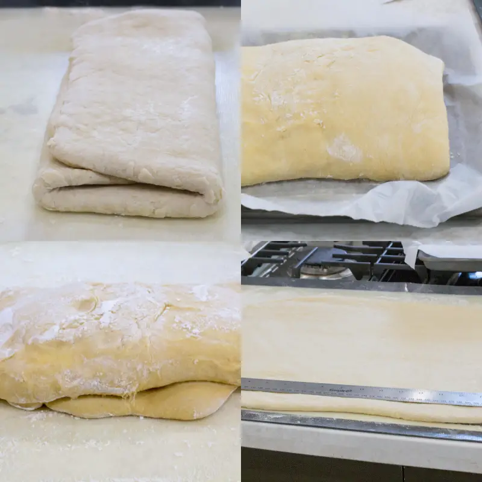

MEDIALUNA
INGREDIENTES
-
Masa
- 500 g de harina
- leche 200cm3
- 75g azúcar
- 15 g de sal
- 1 huevo
-
Empaste
- 50 g harina
- 250 g manteca
- 150 g de azúcar
- 200 cm3 de agua
- 200 gr azúcar
Masa
Formar una corona con la harina y en el medio colocar los ingredientes y mezclar, luego envolvemos la masa y la dejamos reposar aprox unos 30 min.

Laminado
Después del reposo de la masa estirarla en forma rectangular, poner en el centro el empaste frio encerrarlo con la masa y estilarlo con un palo de amarzar. Repetir 3 veces
Coccion
Formar las medialunas,acomodarlas en una bandeja para horno y dejarlas reposar hasta que doble su tamaño. Cocinar en fuego medio por 15 min aprox., luego de retirarlas del horno pintarlas con almibar.